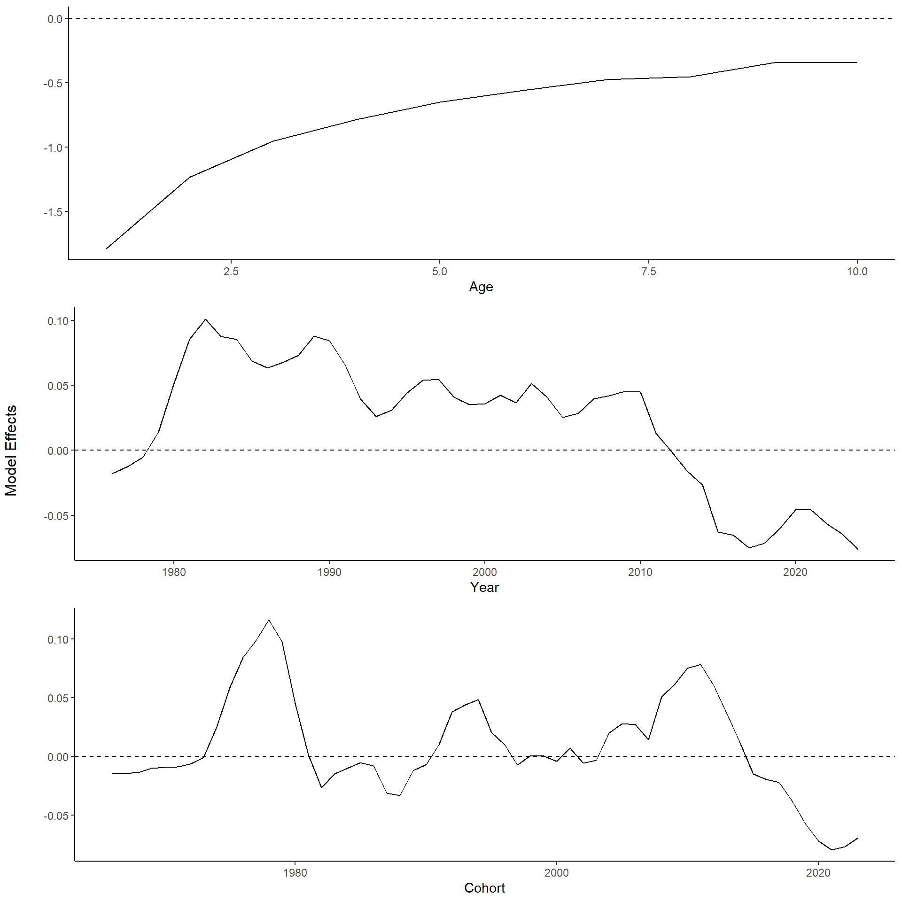
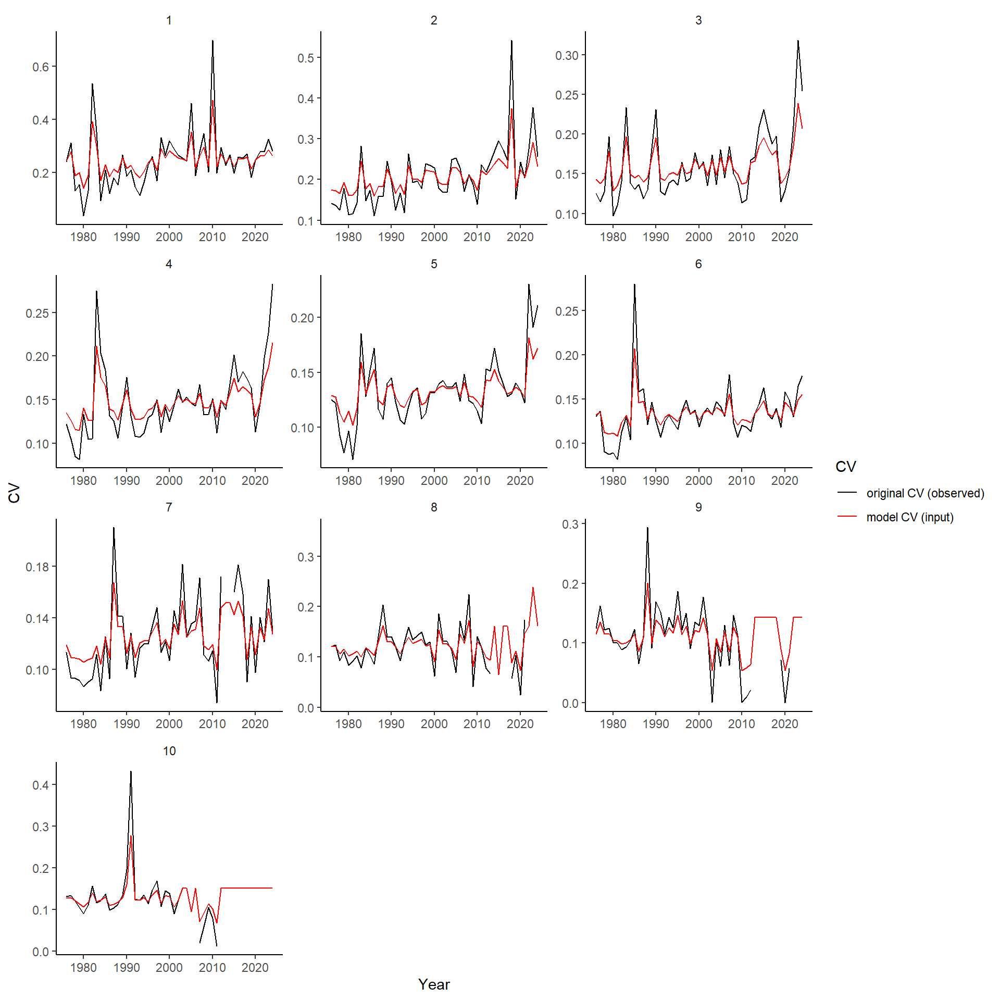

Catch-at-age: assessment plots
2024-12-19
1 SET-UP
1.1 settings
source('0.0_settings.R')1.2 load all data
load(paste0(dir.rdat, "caa.Rdata"))
load(paste0(dir.rdat, "catch.caa.Rdata"))
load(paste0(dir.rdat, "lf.caa.Rdata"))
load(paste0(dir.rdat, "bio.caa.Rdata"))2 Input data plot
bio.caa$id <- with(bio.caa,paste(sample.id,year,period,region,gear),collapse='.')
bio.in <- ddply(bio.caa,c('year','period','region','gear'),summarise,n=length(id),N=length(unique(id)))
bio.in$input <- 'bio'
lf.caa$id <- with(lf.caa,paste(sample.id,year,period,region,gear),collapse='.')
lf.in <- ddply(lf.caa,c('year','period','region','gear'),summarise,n=length(id),N=length(unique(id)))
lf.in$input <- 'lf'
names(catch.caa)[5] <- 'N'
catch.caa$input <- 'catch'
cols <- c("year","period","region","gear","N","input")
all <- rbind(catch.caa[,cols],lf.in[,cols],bio.in[,cols])
all$input <- factor(all$input,levels=c("catch","lf","bio"))
fnames <- as_labeller(c(`catch` = "Débarquement / Landings (t)", `lf` = "Échantillons de fréquence de longueur (nombre) / Length-frequency samples (number)",`bio` = "Biologique (nombre de poissons) / Biological (number of fish)"))
p1 <- ggplot(all,aes(x=year,y=N,fill=gear))+
geom_bar(stat='identity')+
facet_wrap(input~.,scale='free_y',ncol=1,labeller = fnames)+
scale_y_continuous(expand = c(0,0))+
scale_x_continuous(expand = c(0,0), limits=c(1975,tail(my.year,1)+1))+
scale_fill_viridis_d(na.value = "grey50")+
theme(legend.position = 'top')+
labs(x='Année/Year',y='',fill='Enging / Gear')
ggsave(paste0("../../img/", tail(my.year,1),"/Samples_gear.png"), width=8, height=6, dpi=600, units="in")
## Warning: Removed 411 rows containing missing values or values outside the scale range (`geom_bar()`).
p2 <- ggplot(all,aes(x=year,y=N,fill=as.factor(period)))+
geom_bar(stat='identity')+
facet_wrap(input~.,scale='free_y',ncol=1,labeller = fnames)+
scale_y_continuous(expand = c(0,0))+
scale_x_continuous(expand = c(0,0), limits=c(1975,tail(my.year,1)+1))+
scale_fill_viridis_d(na.value = "grey50")+
theme(legend.position = 'top')+
labs(x='Année/Year',y='',fill='Période / Period')
ggsave(paste0("../../img/", tail(my.year,1),"/Samples_period.png"), width=8, height=6, dpi=600, units="in")
## Warning: Removed 411 rows containing missing values or values outside the scale range (`geom_bar()`).
p3 <- ggplot(all,aes(x=year,y=N,fill=region))+
geom_bar(stat='identity')+
facet_wrap(input~.,scale='free_y',ncol=1,labeller = fnames)+
scale_y_continuous(expand = c(0,0))+
scale_x_continuous(expand = c(0,0), limits=c(1975,tail(my.year,1)+1))+
scale_fill_viridis_d(na.value = "grey50")+
theme(legend.position = 'top')+
labs(x='Année/Year',y='',fill='Région / Region')
ggsave(paste0("../../img/", tail(my.year,1),"/Samples_region.png"), width=8, height=6, dpi=600, units="in")
## Warning: Removed 411 rows containing missing values or values outside the scale range (`geom_bar()`).
grid.arrange(p1,p2,p3,ncol=3)
## Warning: Removed 411 rows containing missing values or values outside the scale range (`geom_bar()`).
## Removed 411 rows containing missing values or values outside the scale range (`geom_bar()`).
## Removed 411 rows containing missing values or values outside the scale range (`geom_bar()`).
sample_export <- rbind(lf.in[,cols],bio.in[,cols])
sample_export$input <- factor(sample_export$input,levels=c("lf","bio"))
fnamesexport <- as_labeller(c(`lf` = "Length-frequency samples (number)",`bio` = "Biological (number)"))
p3ex <- ggplot(sample_export,aes(x=year,y=N,fill=region))+
geom_bar(stat='identity')+
facet_wrap(input~.,scale='free_y',ncol=1,labeller = fnames)+
scale_y_continuous(expand = c(0,0))+
scale_x_continuous(expand = c(0,0), limits=c(1975,tail(my.year,1)+1))+
scale_fill_viridis_d(na.value = "grey50")+
theme(legend.position = 'right')+
labs(x='',y='',fill='Region')
ggsave(paste0("../../img/", tail(my.year,1),"/Samples_EN.png"), width=8, height=4, dpi=600, units="in")
## Warning: Removed 35 rows containing missing values or values outside the scale range (`geom_bar()`).3 CAA plots
3.1 RAW
caa$zero <- caa$caan==0
ggplot(caa,aes(x=year,y=age))+
geom_point(alpha=0.8,aes(size=caan,col=zero))+
scale_size(range = c(1,12))+
scale_y_continuous(breaks=min(caa$age):max(caa$age))+
scale_color_manual(values=c('black','grey'))+
labs(x='Year',y='Age',size='Numbers',col='Zero')
3.2 SPAY
d <- reshape2::dcast(caa,age~year,value.var = 'caan')
if(length(unique(d$year)) >1){
d <- cbind(age=d[,1],spay(d[,-1]))
d <- reshape2::melt(d,id.vars='age',variable.name='year',value.name='caan')
d$year <- as.numeric(as.character(d$year))
ggplot(d,aes(x=year,y=age))+
geom_point(alpha=0.8,aes(size=caan))+
scale_size(range = c(1,12))+
scale_y_continuous(breaks=min(caa$age):max(caa$age))
}3.3 SPAY: prop
d <- ddply(caa,c('year'),transform,caan.prop=caan/sum(caan))
CAA<- ggplot(d,aes(x=year,y=age))+
geom_point(alpha=0.8,aes(size=caan.prop,col=zero))+
scale_size(name="",range = c(1,12))+
scale_y_continuous(breaks=min(caa$age):max(caa$age))+
scale_color_manual(values=c('black','grey'), guide=F)
CAA + labs(x='Year',y='Age',size='Proportion',col='Zero')
## Warning: The `guide` argument in `scale_*()` cannot be `FALSE`. This was deprecated in ggplot2 3.3.4.
## ℹ Please use "none" instead.
## This warning is displayed once every 8 hours.
## Call `lifecycle::last_lifecycle_warnings()` to see where this warning was generated.
ggsave(paste0("../../img/",tail(my.year,1),"/CAA_EN.png"), width=8, height=4, dpi=600, units="in")
CAA + labs(x='Année',y='Âge',size='Proportion',col='Zero')ggsave(paste0("../../img/",tail(my.year,1),"/CAA_FR.png"), width=8, height=4, dpi=600, units="in")
CAA + labs(x='Année | Year',y='Âge | Age',size='Proportion',col='Zero')ggsave(paste0("../../img/",tail(my.year,1),"/CAA_BI.png"), width=8, height=4, dpi=600, units="in")
3.4 SPYA
d <- reshape2::dcast(caa,age~year,value.var = 'caan')
d <- cbind(age=d[,1],spya(d[,-1]))
d <- reshape2::melt(d,id.vars='age',variable.name='year',value.name='caan')
d$year <- as.numeric(as.character(d$year))
ggplot(d,aes(x=year,y=age))+
geom_point(alpha=0.8,aes(size=caan))+
scale_size(range = c(1,12))+
scale_y_continuous(breaks=min(caa$age):max(caa$age))
3.5 SPYA: prop
d <- ddply(caa,c('age'),transform,caan.prop=caan/sum(caan))
ggplot(d,aes(x=year,y=age))+
geom_point(alpha=0.8,aes(size=caan.prop))+
scale_size(range = c(1,12))+
scale_y_continuous(breaks=min(caa$age):max(caa$age))
4 WAA
4.1 linear interpol
caa.old <- expand.grid(year=1968:max(caa$year),age=unique(caa$age))
caa.inter <- merge(caa.old,caa,all=TRUE)
caa.inter <- caa.inter[order(caa.inter$age,caa.inter$year),]
par(mfrow=c(5,2))
caa.inter$waa.interpol <- ddply(caa.inter,c('age'),summarise,waa.interpol=interpol(year,waa,"linear",from = 1968,to=max(caa.inter$year),title = age[1])[,6])[,2]
## Warning: Returning more (or less) than 1 row per `summarise()` group was deprecated in dplyr 1.1.0.
## ℹ Please use `reframe()` instead.
## ℹ When switching from `summarise()` to `reframe()`, remember that `reframe()` always returns an ungrouped data frame and adjust
## accordingly.
## ℹ The deprecated feature was likely used in the plyr package.
## Please report the issue at <https://github.com/hadley/plyr/issues>.
## This warning is displayed once every 8 hours.
## Call `lifecycle::last_lifecycle_warnings()` to see where this warning was generated.
caa.inter <- caa.inter[order(caa.inter$year,caa.inter$age,decreasing = F),]
write.csv(caa.inter,paste0('../../csv/',tail(my.year,1),'/caa_interpol.csv'),row.names = FALSE)4.2 Plot
p <- ggplot(caa.inter,aes(x=year,y=waa.interpol,col=as.factor(age)))+
geom_line()+
scale_color_viridis_d()+
scale_x_continuous(expand=c(0,0))+
labs(y='Catch weight (kg)',x='Year')+
theme(legend.position = 'none')
p
p <- p+labs(y='Poids dans le captures (kg)',x='Année')
ggsave(paste0('waac_FR.png'),p,'png',paste0('../../img/', tail(my.year,1)),width = 15,height = 8,units = 'cm')
Try model smoothing. Not used because if changes to WAA, waa*caa does not equal total catch anymore. # Model predictions
caa$waa.cv <- 0.01 # need to calculate this!! this is absurdly small value so all predictions will match observed
caa[caa$caaw==0,'caaw'] <- NA # should be correct in get.caa function
waa.fit <- with(caa, armatrix.fit(year=caa$year,age=caa$age,x=caa$waa,cv=caa$waa.cv))
## Optimizing tape... Done
## Matching hessian patterns... Done
## outer mgc: 250.8888
## outer mgc: 250.8888
## 0: -324.91078: -1.78870 -1.21660 -0.924164 -0.751573 -0.611060 -0.517987 -0.435124 -0.397405 -0.312974 -0.276327 -2.30259 -2.30259 -2.30259 0.00000 0.00000 0.00000 0.00000
## outer mgc: 78.84675
## outer mgc: 197.3096
## outer mgc: 145.3097
## outer mgc: 33.70632
## outer mgc: 68.3059
## outer mgc: 27.8949
## outer mgc: 43.573
## outer mgc: 25.83046
## outer mgc: 29.73164
## outer mgc: 25.03946
## 10: -387.53744: -1.79819 -1.22213 -0.939359 -0.759789 -0.626198 -0.531388 -0.447700 -0.417112 -0.334492 -0.301205 -2.57920 -2.72751 -2.17721 0.0555047 0.101548 -0.104748 -0.553074
## outer mgc: 34.15447
## outer mgc: 23.96033
## outer mgc: 27.08572
## outer mgc: 22.56271
## outer mgc: 29.23233
## outer mgc: 28.24097
## outer mgc: 23.11394
## outer mgc: 26.95229
## outer mgc: 58.61882
## outer mgc: 18.42791
## 20: -395.95103: -1.79560 -1.22584 -0.935497 -0.761801 -0.626026 -0.530503 -0.449131 -0.414621 -0.335865 -0.300461 -2.69926 -2.85774 -2.21704 0.0893062 0.147446 -0.145292 -0.823091
## outer mgc: 29.65919
## outer mgc: 17.34196
## outer mgc: 24.3262
## outer mgc: 16.66737
## outer mgc: 22.81645
## outer mgc: 15.89146
## outer mgc: 30.37877
## outer mgc: 15.19042
## outer mgc: 26.01359
## outer mgc: 14.49413
## 30: -399.18577: -1.79616 -1.22524 -0.935562 -0.763392 -0.624369 -0.532446 -0.448192 -0.416230 -0.334936 -0.301148 -2.75684 -2.90686 -2.22872 0.110429 0.172430 -0.172916 -0.976315
## outer mgc: 26.33037
## outer mgc: 13.76314
## outer mgc: 17.61809
## outer mgc: 13.10843
## outer mgc: 13.81372
## outer mgc: 12.44521
## outer mgc: 29.26131
## outer mgc: 49.54542
## outer mgc: 34.95701
## outer mgc: 14.1012
## 40: -403.47297: -1.79409 -1.22748 -0.933362 -0.764658 -0.622485 -0.532904 -0.451223 -0.413745 -0.334705 -0.301987 -2.85787 -2.96447 -2.25765 0.161528 0.226792 -0.234187 -1.28967
## outer mgc: 11.43814
## outer mgc: 12.95125
## outer mgc: 15.63533
## outer mgc: 12.71617
## outer mgc: 14.46122
## outer mgc: 17.35598
## outer mgc: 16.04846
## outer mgc: 12.82721
## outer mgc: 14.69455
## outer mgc: 11.40822
## 50: -405.14857: -1.79464 -1.22350 -0.937128 -0.765566 -0.624703 -0.531485 -0.448394 -0.414322 -0.337795 -0.306321 -2.88275 -2.93624 -2.27351 0.206555 0.271858 -0.277467 -1.46378
## outer mgc: 16.14117
## outer mgc: 16.37549
## outer mgc: 10.63098
## outer mgc: 17.40094
## outer mgc: 16.06497
## outer mgc: 14.03019
## outer mgc: 15.17077
## outer mgc: 12.10297
## outer mgc: 10.28677
## outer mgc: 15.98798
## 60: -406.44162: -1.79784 -1.22819 -0.937796 -0.766396 -0.625471 -0.532017 -0.451966 -0.414284 -0.337225 -0.303200 -2.88826 -2.90231 -2.28839 0.263786 0.338898 -0.326063 -1.61678
## outer mgc: 14.35091
## outer mgc: 11.9491
## outer mgc: 11.57149
## outer mgc: 11.02848
## outer mgc: 8.509554
## outer mgc: 10.54496
## outer mgc: 8.705477
## outer mgc: 9.481785
## outer mgc: 6.614282
## outer mgc: 5.474458
## 70: -407.61288: -1.79604 -1.22528 -0.936430 -0.766323 -0.628573 -0.535815 -0.454305 -0.419174 -0.340852 -0.304013 -2.87601 -2.86192 -2.30065 0.344022 0.441737 -0.382695 -1.74832
## outer mgc: 6.157954
## outer mgc: 12.75257
## outer mgc: 25.0913
## outer mgc: 10.94435
## outer mgc: 13.64819
## outer mgc: 12.11089
## outer mgc: 12.22072
## outer mgc: 18.74297
## outer mgc: 23.6552
## outer mgc: 18.34572
## 80: -409.84893: -1.80256 -1.23611 -0.945173 -0.769534 -0.632240 -0.543864 -0.459679 -0.428333 -0.350514 -0.310772 -2.82399 -2.73341 -2.33348 0.675714 0.853735 -0.517637 -1.92788
## outer mgc: 49.99646
## outer mgc: 15.4947
## outer mgc: 11.46043
## outer mgc: 10.07865
## outer mgc: 9.410317
## outer mgc: 14.65634
## outer mgc: 40.74788
## outer mgc: 20.46749
## outer mgc: 11.4859
## outer mgc: 3.261746
## 90: -412.02915: -1.80666 -1.23842 -0.949721 -0.780289 -0.642323 -0.551233 -0.469481 -0.435411 -0.357201 -0.322122 -2.72463 -2.59210 -2.34220 1.17184 1.28870 -0.596737 -2.17314
## outer mgc: 2.236154
## outer mgc: 3.830163
## outer mgc: 2.142702
## outer mgc: 2.782989
## outer mgc: 2.138299
## outer mgc: 2.267817
## outer mgc: 2.132301
## outer mgc: 2.299745
## outer mgc: 2.125428
## outer mgc: 2.316672
## 100: -412.06671: -1.80654 -1.23810 -0.949760 -0.780263 -0.643199 -0.551619 -0.470265 -0.436085 -0.356844 -0.321554 -2.72559 -2.59215 -2.34346 1.17959 1.29426 -0.599085 -2.18149
## outer mgc: 2.11811
## outer mgc: 2.366789
## outer mgc: 2.110564
## outer mgc: 2.398099
## outer mgc: 2.102902
## outer mgc: 2.415678
## outer mgc: 2.095182
## outer mgc: 2.426915
## outer mgc: 2.087436
## outer mgc: 2.434966
## 110: -412.10441: -1.80676 -1.23826 -0.949996 -0.780449 -0.643387 -0.551872 -0.470408 -0.436334 -0.357013 -0.321759 -2.72605 -2.59158 -2.34381 1.18867 1.30054 -0.601580 -2.19052
## outer mgc: 2.079681
## outer mgc: 2.441526
## outer mgc: 2.071926
## outer mgc: 2.447477
## outer mgc: 2.064177
## outer mgc: 2.453336
## outer mgc: 2.056436
## outer mgc: 2.459402
## outer mgc: 2.048704
## outer mgc: 2.465862
## 120: -412.14128: -1.80693 -1.23842 -0.950185 -0.780629 -0.643568 -0.552069 -0.470580 -0.436524 -0.357185 -0.321939 -2.72621 -2.59065 -2.34413 1.19775 1.30670 -0.603993 -2.19965
## outer mgc: 2.040982
## outer mgc: 2.472829
## outer mgc: 2.03327
## outer mgc: 2.480377
## outer mgc: 2.025568
## outer mgc: 2.488555
## outer mgc: 2.017876
## outer mgc: 2.497397
## outer mgc: 2.010194
## outer mgc: 2.506925
## 130: -412.17737: -1.80709 -1.23857 -0.950352 -0.780788 -0.643733 -0.552239 -0.470741 -0.436689 -0.357341 -0.322098 -2.72613 -2.58946 -2.34445 1.20678 1.31275 -0.606336 -2.20890
## outer mgc: 2.002521
## outer mgc: 2.517161
## outer mgc: 1.994858
## outer mgc: 2.52812
## outer mgc: 1.987203
## outer mgc: 2.53982
## outer mgc: 1.979556
## outer mgc: 2.552277
## outer mgc: 1.971917
## outer mgc: 2.565511
## 140: -412.21270: -1.80722 -1.23870 -0.950500 -0.780925 -0.643881 -0.552388 -0.470883 -0.436834 -0.357478 -0.322239 -2.72586 -2.58810 -2.34477 1.21570 1.31868 -0.608627 -2.21824
## outer mgc: 1.964285
## outer mgc: 2.579541
## outer mgc: 1.956661
## outer mgc: 2.594391
## outer mgc: 1.949042
## outer mgc: 2.610088
## outer mgc: 1.94143
## outer mgc: 2.614503
## outer mgc: 1.933826
## outer mgc: 2.607238
## 150: -412.24730: -1.80734 -1.23881 -0.950627 -0.781047 -0.644009 -0.552520 -0.471007 -0.436961 -0.357598 -0.322361 -2.72546 -2.58664 -2.34510 1.22446 1.32448 -0.610882 -2.22768
## outer mgc: 1.926242
## outer mgc: 2.608851
## outer mgc: 1.918682
## outer mgc: 2.603423
## outer mgc: 1.911145
## outer mgc: 2.603373
## outer mgc: 1.903633
## outer mgc: 2.599075
## outer mgc: 1.896145
## outer mgc: 2.598035
## 160: -412.28133: -1.80745 -1.23893 -0.950748 -0.781175 -0.644135 -0.552655 -0.471133 -0.437088 -0.357721 -0.322484 -2.72486 -2.58507 -2.34542 1.23321 1.33024 -0.613079 -2.23716
## outer mgc: 1.888683
## outer mgc: 2.595687
## outer mgc: 1.881244
## outer mgc: 2.595455
## outer mgc: 1.873832
## outer mgc: 2.593655
## outer mgc: 1.866445
## outer mgc: 2.59306
## outer mgc: 1.859083
## outer mgc: 2.591506
## 170: -412.31481: -1.80757 -1.23905 -0.950876 -0.781310 -0.644266 -0.552796 -0.471265 -0.437220 -0.357849 -0.322613 -2.72404 -2.58340 -2.34574 1.24200 1.33600 -0.615214 -2.24665
## outer mgc: 1.851746
## outer mgc: 2.590701
## outer mgc: 1.844435
## outer mgc: 2.589307
## outer mgc: 1.83715
## outer mgc: 2.588382
## outer mgc: 1.829891
## outer mgc: 2.587094
## outer mgc: 1.822657
## outer mgc: 2.586103
## 180: -412.34773: -1.80770 -1.23919 -0.951008 -0.781450 -0.644402 -0.552941 -0.471402 -0.437357 -0.357983 -0.322746 -2.72303 -2.58167 -2.34606 1.25083 1.34175 -0.617291 -2.25614
## outer mgc: 1.81545
## outer mgc: 2.584886
## outer mgc: 1.808268
## outer mgc: 2.583859
## outer mgc: 1.801112
## outer mgc: 2.582692
## outer mgc: 1.793982
## outer mgc: 2.581647
## outer mgc: 1.786879
## outer mgc: 2.580516
## 190: -412.38012: -1.80783 -1.23932 -0.951146 -0.781595 -0.644543 -0.553091 -0.471543 -0.437497 -0.358120 -0.322883 -2.72186 -2.57989 -2.34638 1.25970 1.34750 -0.619313 -2.26563
## outer mgc: 1.779801
## outer mgc: 2.579463
## outer mgc: 1.77275
## outer mgc: 2.578357
## outer mgc: 1.765724
## outer mgc: 2.577303
## outer mgc: 1.758725
## outer mgc: 2.576215
## outer mgc: 1.751752
## outer mgc: 2.575163
## 200: -412.41199: -1.80797 -1.23946 -0.951288 -0.781744 -0.644688 -0.553244 -0.471688 -0.437642 -0.358261 -0.323024 -2.72052 -2.57807 -2.34669 1.26862 1.35325 -0.621283 -2.27510
## outer mgc: 1.744804
## outer mgc: 2.574089
## outer mgc: 1.737883
## outer mgc: 2.573038
## outer mgc: 1.730988
## outer mgc: 2.571974
## outer mgc: 1.724119
## outer mgc: 2.570925
## outer mgc: 1.717276
## outer mgc: 2.569868
## 210: -412.44335: -1.80811 -1.23961 -0.951434 -0.781897 -0.644836 -0.553401 -0.471835 -0.437789 -0.358406 -0.323167 -2.71905 -2.57622 -2.34700 1.27759 1.35900 -0.623206 -2.28456
## outer mgc: 1.710459
## outer mgc: 2.568821
## outer mgc: 1.703668
## outer mgc: 2.567767
## outer mgc: 1.696903
## outer mgc: 2.56672
## outer mgc: 1.690163
## outer mgc: 2.565669
## outer mgc: 1.68345
## outer mgc: 2.564621
## 220: -412.47421: -1.80825 -1.23975 -0.951584 -0.782053 -0.644988 -0.553560 -0.471985 -0.437938 -0.358552 -0.323313 -2.71746 -2.57435 -2.34730 1.28661 1.36475 -0.625082 -2.29400
## outer mgc: 1.676762
## outer mgc: 2.563569
## outer mgc: 1.6701
## outer mgc: 2.562518
## outer mgc: 1.663463
## outer mgc: 2.561464
## outer mgc: 1.656852
## outer mgc: 2.560409
## outer mgc: 1.650267
## outer mgc: 2.55935
## 230: -412.50458: -1.80840 -1.23990 -0.951737 -0.782212 -0.645142 -0.553722 -0.472137 -0.438090 -0.358701 -0.323461 -2.71575 -2.57247 -2.34760 1.29569 1.37050 -0.626915 -2.30342
## outer mgc: 1.643706
## outer mgc: 2.558289
## outer mgc: 1.637172
## outer mgc: 2.557224
## outer mgc: 1.630662
## outer mgc: 2.556155
## outer mgc: 1.624178
## outer mgc: 2.555082
## outer mgc: 1.617719
## outer mgc: 2.554004
## 240: -412.53446: -1.80855 -1.24006 -0.951892 -0.782374 -0.645298 -0.553886 -0.472291 -0.438244 -0.358851 -0.323611 -2.71395 -2.57059 -2.34789 1.30482 1.37625 -0.628705 -2.31280
## outer mgc: 1.611285
## outer mgc: 2.55292
## outer mgc: 1.604876
## outer mgc: 2.551832
## outer mgc: 1.598492
## outer mgc: 2.550737
## outer mgc: 1.592133
## outer mgc: 2.549635
## outer mgc: 1.585798
## outer mgc: 2.548527
## 250: -412.56388: -1.80871 -1.24022 -0.952051 -0.782538 -0.645456 -0.554052 -0.472447 -0.438399 -0.359003 -0.323763 -2.71205 -2.56869 -2.34817 1.31402 1.38200 -0.630455 -2.32217
## outer mgc: 1.579488
## outer mgc: 2.547411
## outer mgc: 1.573202
## outer mgc: 2.546288
## outer mgc: 1.566941
## outer mgc: 2.545156
## outer mgc: 1.560705
## outer mgc: 2.544016
## outer mgc: 1.554492
## outer mgc: 2.542867
## 260: -412.59282: -1.80887 -1.24038 -0.952211 -0.782704 -0.645616 -0.554219 -0.472604 -0.438556 -0.359157 -0.323915 -2.71008 -2.56679 -2.34845 1.32327 1.38774 -0.632166 -2.33150
## outer mgc: 1.548304
## outer mgc: 2.541709
## outer mgc: 1.542139
## outer mgc: 2.540541
## outer mgc: 1.535999
## outer mgc: 2.539363
## outer mgc: 1.529882
## outer mgc: 2.538174
## outer mgc: 1.52379
## outer mgc: 2.536975
## 270: -412.62131: -1.80903 -1.24054 -0.952374 -0.782872 -0.645778 -0.554389 -0.472762 -0.438714 -0.359311 -0.324069 -2.70803 -2.56489 -2.34873 1.33259 1.39347 -0.633838 -2.34080
## outer mgc: 1.51772
## outer mgc: 2.535765
## outer mgc: 1.511675
## outer mgc: 2.534543
## outer mgc: 1.505652
## outer mgc: 2.533309
## outer mgc: 1.499653
## outer mgc: 2.532063
## outer mgc: 1.493678
## outer mgc: 2.530804
## 280: -412.64934: -1.80919 -1.24071 -0.952539 -0.783043 -0.645941 -0.554559 -0.472921 -0.438873 -0.359466 -0.324224 -2.70593 -2.56299 -2.34900 1.34198 1.39920 -0.635473 -2.35008
## outer mgc: 1.487725
## outer mgc: 2.529532
## outer mgc: 1.481795
## outer mgc: 2.528248
## outer mgc: 1.475888
## outer mgc: 2.526949
## outer mgc: 1.470004
## outer mgc: 2.525637
## outer mgc: 1.464142
## outer mgc: 2.52431
## 290: -412.67693: -1.80935 -1.24087 -0.952706 -0.783215 -0.646106 -0.554731 -0.473082 -0.439033 -0.359623 -0.324380 -2.70376 -2.56109 -2.34926 1.35143 1.40491 -0.637071 -2.35932
## outer mgc: 1.458303
## outer mgc: 2.522969
## outer mgc: 1.452487
## outer mgc: 2.521614
## outer mgc: 1.446692
## outer mgc: 2.520243
## outer mgc: 1.44092
## outer mgc: 2.518856
## outer mgc: 1.43517
## outer mgc: 2.517454
## 300: -412.70408: -1.80952 -1.24104 -0.952875 -0.783388 -0.646272 -0.554905 -0.473243 -0.439194 -0.359780 -0.324537 -2.70154 -2.55919 -2.34952 1.36094 1.41061 -0.638633 -2.36854
## outer mgc: 1.429442
## outer mgc: 2.516036
## outer mgc: 1.423736
## outer mgc: 2.514602
## outer mgc: 1.418051
## outer mgc: 2.513151
## outer mgc: 1.412388
## outer mgc: 2.511684
## outer mgc: 1.406746
## outer mgc: 2.510199
## 310: -412.73079: -1.80969 -1.24121 -0.953046 -0.783564 -0.646440 -0.555079 -0.473406 -0.439356 -0.359938 -0.324694 -2.69928 -2.55730 -2.34977 1.37053 1.41630 -0.640158 -2.37772
## outer mgc: 1.401126
## outer mgc: 2.508697
## outer mgc: 1.395527
## outer mgc: 2.507178
## outer mgc: 1.389949
## outer mgc: 2.505641
## outer mgc: 1.384392
## outer mgc: 2.504086
## outer mgc: 1.378856
## outer mgc: 2.502513
## 320: -412.75707: -1.80987 -1.24139 -0.953218 -0.783741 -0.646608 -0.555255 -0.473569 -0.439519 -0.360097 -0.324853 -2.69697 -2.55540 -2.35001 1.38018 1.42197 -0.641648 -2.38688
## outer mgc: 1.373341
## outer mgc: 2.500921
## outer mgc: 1.367846
## outer mgc: 2.499311
## outer mgc: 1.362372
## outer mgc: 2.497682
## outer mgc: 1.356918
## outer mgc: 2.496034
## outer mgc: 1.351485
## outer mgc: 2.494367
## 330: -412.78293: -1.81004 -1.24156 -0.953393 -0.783919 -0.646778 -0.555432 -0.473733 -0.439682 -0.360257 -0.325012 -2.69462 -2.55352 -2.35025 1.38990 1.42762 -0.643102 -2.39601
## outer mgc: 1.346072
## outer mgc: 2.49268
## outer mgc: 1.340678
## outer mgc: 2.490974
## outer mgc: 1.335305
## outer mgc: 2.489248
## outer mgc: 1.329952
## outer mgc: 2.487502
## outer mgc: 1.324618
## outer mgc: 2.485736
## 340: -412.80838: -1.81022 -1.24174 -0.953568 -0.784099 -0.646949 -0.555610 -0.473898 -0.439847 -0.360417 -0.325171 -2.69223 -2.55164 -2.35049 1.39969 1.43325 -0.644520 -2.40511
## outer mgc: 1.319304
## outer mgc: 2.483951
## outer mgc: 1.314009
## outer mgc: 2.482144
## outer mgc: 1.308734
## outer mgc: 2.480318
## outer mgc: 1.303478
## outer mgc: 2.478471
## outer mgc: 1.298241
## outer mgc: 2.476603
## 350: -412.83341: -1.81039 -1.24192 -0.953746 -0.784281 -0.647122 -0.555789 -0.474064 -0.440012 -0.360577 -0.325331 -2.68981 -2.54976 -2.35071 1.40954 1.43886 -0.645903 -2.41419
## outer mgc: 1.293023
## outer mgc: 2.474714
## outer mgc: 1.287824
## outer mgc: 2.472805
## outer mgc: 1.282644
## outer mgc: 2.470874
## outer mgc: 1.277483
## outer mgc: 2.468923
## outer mgc: 1.27234
## outer mgc: 2.466951
## 360: -412.85804: -1.81058 -1.24210 -0.953925 -0.784463 -0.647295 -0.555969 -0.474231 -0.440178 -0.360739 -0.325492 -2.68736 -2.54790 -2.35093 1.41947 1.44444 -0.647250 -2.42325
## outer mgc: 1.267215
## outer mgc: 2.464957
## outer mgc: 1.262109
## outer mgc: 2.462942
## outer mgc: 1.257021
## outer mgc: 2.460907
## outer mgc: 1.251951
## outer mgc: 2.458849
## outer mgc: 1.246899
## outer mgc: 2.456771
## 370: -412.88227: -1.81076 -1.24229 -0.954105 -0.784648 -0.647470 -0.556150 -0.474398 -0.440344 -0.360901 -0.325653 -2.68487 -2.54604 -2.35115 1.42945 1.44999 -0.648561 -2.43228
## outer mgc: 1.241866
## outer mgc: 2.45467
## outer mgc: 1.236849
## outer mgc: 2.452551
## outer mgc: 1.231851
## outer mgc: 2.450406
## outer mgc: 1.22687
## outer mgc: 2.448245
## outer mgc: 1.221907
## outer mgc: 2.446056
## 380: -412.90610: -1.81094 -1.24247 -0.954287 -0.784834 -0.647645 -0.556332 -0.474566 -0.440511 -0.361063 -0.325815 -2.68236 -2.54419 -2.35135 1.43951 1.45552 -0.649837 -2.44129
## outer mgc: 1.216961
## outer mgc: 2.443855
## outer mgc: 1.212032
## outer mgc: 2.441621
## outer mgc: 1.20712
## outer mgc: 2.43938
## outer mgc: 1.202225
## outer mgc: 2.4371
## outer mgc: 1.197348
## outer mgc: 2.434824
## 390: -412.92954: -1.81113 -1.24266 -0.954471 -0.785021 -0.647821 -0.556516 -0.474735 -0.440679 -0.361226 -0.325977 -2.67982 -2.54235 -2.35156 1.44963 1.46102 -0.651078 -2.45028
## outer mgc: 1.192487
## outer mgc: 2.432492
## outer mgc: 1.187643
## outer mgc: 2.430187
## outer mgc: 1.182815
## outer mgc: 2.427795
## outer mgc: 1.178004
## outer mgc: 2.425475
## outer mgc: 1.173209
## outer mgc: 2.423005
## 400: -412.95259: -1.81132 -1.24285 -0.954656 -0.785210 -0.647999 -0.556700 -0.474904 -0.440848 -0.361389 -0.326140 -2.67725 -2.54051 -2.35175 1.45981 1.46648 -0.652283 -2.45925
## outer mgc: 1.168431
## outer mgc: 2.420697
## outer mgc: 1.163669
## outer mgc: 2.41811
## outer mgc: 1.158923
## outer mgc: 2.415871
## outer mgc: 1.154193
## outer mgc: 2.413086
## outer mgc: 1.149479
## outer mgc: 2.411035
## 410: -412.97526: -1.81151 -1.24304 -0.954842 -0.785400 -0.648177 -0.556886 -0.475074 -0.441018 -0.361553 -0.326303 -2.67465 -2.53869 -2.35194 1.47005 1.47191 -0.653453 -2.46821
## outer mgc: 1.144781
## outer mgc: 2.407878
## outer mgc: 1.140098
## outer mgc: 2.406274
## outer mgc: 1.135432
## outer mgc: 2.40236
## outer mgc: 1.13078
## outer mgc: 2.401781
## outer mgc: 1.126144
## outer mgc: 2.396243
## 420: -412.99756: -1.81170 -1.24323 -0.955030 -0.785591 -0.648356 -0.557073 -0.475244 -0.441188 -0.361717 -0.326468 -2.67203 -2.53688 -2.35213 1.48036 1.47731 -0.654588 -2.47715
## outer mgc: 1.121524
## outer mgc: 2.397997
## outer mgc: 1.116918
## outer mgc: 2.388863
## outer mgc: 1.112328
## outer mgc: 2.395979
## outer mgc: 1.107753
## outer mgc: 2.378679
## outer mgc: 1.103192
## outer mgc: 2.398332
## 430: -413.01948: -1.81189 -1.24342 -0.955223 -0.785786 -0.648534 -0.557260 -0.475414 -0.441364 -0.361884 -0.326629 -2.66938 -2.53508 -2.35231 1.49072 1.48267 -0.655689 -2.48609
## outer mgc: 1.098648
## outer mgc: 2.362156
## outer mgc: 1.094116
## outer mgc: 2.41186
## outer mgc: 1.089604
## outer mgc: 2.331737
## outer mgc: 1.085098
## outer mgc: 2.456027
## outer mgc: 1.080624
## outer mgc: 2.275297
## 440: -413.04101: -1.81211 -1.24362 -0.955391 -0.785968 -0.648730 -0.557475 -0.475583 -0.441508 -0.362030 -0.326822 -2.66671 -2.53330 -2.35248 1.50114 1.48798 -0.656755 -2.49501
## outer mgc: 1.076145
## outer mgc: 2.583775
## outer mgc: 1.071735
## outer mgc: 2.250927
## outer mgc: 1.067301
## outer mgc: 2.660892
## outer mgc: 1.063157
## outer mgc: 2.058745
## outer mgc: 1.059142
## outer mgc: 2.097768
## 450: -413.06232: -1.81227 -1.24392 -0.955636 -0.786281 -0.648899 -0.557617 -0.475838 -0.441778 -0.362315 -0.326944 -2.66365 -2.53147 -2.35264 1.51201 1.49332 -0.657547 -2.50343
## outer mgc: 1.055408
## outer mgc: 1.644598
## outer mgc: 13.68731
## outer mgc: 10.37923
## outer mgc: 11.75095
## outer mgc: 18.64796
## outer mgc: 20.26801
## outer mgc: 14.60643
## outer mgc: 1.582435
## outer mgc: 2.82193
## 460: -413.69963: -1.82025 -1.25174 -0.962276 -0.793059 -0.654389 -0.563315 -0.480238 -0.445648 -0.365919 -0.330354 -2.44557 -2.47733 -2.35221 2.25664 1.69286 -0.662888 -2.84720
## outer mgc: 0.77278
## outer mgc: 5.818213
## outer mgc: 8.426578
## outer mgc: 4.630319
## outer mgc: 7.857478
## outer mgc: 5.911118
## outer mgc: 3.08762
## outer mgc: 0.7518393
## outer mgc: 0.7211622
## outer mgc: 0.3411214
## 470: -413.79450: -1.83719 -1.26863 -0.979269 -0.809847 -0.671504 -0.579815 -0.497177 -0.462175 -0.382374 -0.346720 -2.36413 -2.42677 -2.35539 2.47536 1.79158 -0.673785 -3.11979
## outer mgc: 0.8821009
## outer mgc: 0.8601168
## outer mgc: 1.290276
## outer mgc: 3.101215
## outer mgc: 1.289124
## outer mgc: 1.168926
## outer mgc: 0.4160514
## outer mgc: 0.3809526
## outer mgc: 0.1250095
## outer mgc: 0.05816419
## 480: -413.81632: -1.83232 -1.26383 -0.974527 -0.805126 -0.666881 -0.575239 -0.492709 -0.457701 -0.377953 -0.342233 -2.39797 -2.42967 -2.35716 2.37825 1.78624 -0.682608 -3.39189
## outer mgc: 0.04172342
## outer mgc: 0.02685035
## outer mgc: 0.002283849
## outer mgc: 0.0006372051
## outer mgc: 0.0006372051
## outer mgc: 4.63155
## outer mgc: 4.63033
## outer mgc: 5.964568
## outer mgc: 5.963875
## outer mgc: 6.019822
## outer mgc: 6.020778
## outer mgc: 6.054638
## outer mgc: 6.054761
## outer mgc: 6.069122
## outer mgc: 6.069456
## outer mgc: 6.063774
## outer mgc: 6.064509
## outer mgc: 6.016547
## outer mgc: 6.01586
## outer mgc: 5.758652
## outer mgc: 5.759855
## outer mgc: 5.061648
## outer mgc: 5.060373
## outer mgc: 3.391594
## outer mgc: 3.391984
## outer mgc: 0.0205718
## outer mgc: 0.02108706
## outer mgc: 0.04631542
## outer mgc: 0.04632059
## outer mgc: 0.7644661
## outer mgc: 0.7662469
## outer mgc: 0.009411274
## outer mgc: 0.008913675
## outer mgc: 0.0169511
## outer mgc: 0.01691924
## outer mgc: 0.07275056
## outer mgc: 0.0721591
## outer mgc: 0.001804552
## outer mgc: 0.001368263
## outer mgc: 1
waa.fit
## armatrix model: log likelihood is 413.8163 Convergence OK
caa$waa.cv <- with(caa,waa.sd/waa) # need to calculate this!! this is absurdly small value so all predictions will match observed
waa.fit <- armatrix.fit(year=caa$year,age=caa$age,x=caa$waa,cv=caa$waa.cv)
## Warning in armatrix.fit(year = caa$year, age = caa$age, x = caa$waa, cv = caa$waa.cv): cvs equal to 0/NA replaced by value of historic 95%
## quantile
## Optimizing tape... Done
## Matching hessian patterns... Done
## outer mgc: 79.55763
## outer mgc: 79.55763
## 0: -290.39157: -1.78870 -1.21660 -0.924164 -0.751573 -0.611060 -0.517987 -0.435124 -0.397405 -0.312974 -0.276327 -2.30259 -2.30259 -2.30259 0.00000 0.00000 0.00000 0.00000
## outer mgc: 261.5667
## outer mgc: 115.0475
## outer mgc: 56.40623
## outer mgc: 79.67163
## outer mgc: 38.28104
## outer mgc: 17.15221
## outer mgc: 42.84237
## outer mgc: 36.47504
## outer mgc: 59.05024
## outer mgc: 17.57996
## 10: -350.11427: -1.75531 -1.20440 -0.926271 -0.758942 -0.624186 -0.534528 -0.445640 -0.429729 -0.326565 -0.312169 -2.72097 -2.79169 -3.49667 0.0882708 0.110378 0.149560 0.0895980
## outer mgc: 25.86703
## outer mgc: 14.5845
## outer mgc: 20.28699
## outer mgc: 14.46179
## outer mgc: 30.26119
## outer mgc: 22.1302
## outer mgc: 30.99826
## outer mgc: 10.00033
## outer mgc: 9.171355
## outer mgc: 10.57548
## 20: -354.47491: -1.75967 -1.20656 -0.924519 -0.757157 -0.615977 -0.532560 -0.448437 -0.424802 -0.320167 -0.311336 -2.86600 -2.92823 -3.70557 0.139561 0.166626 0.177288 0.105689
## outer mgc: 6.760486
## outer mgc: 11.64999
## outer mgc: 6.51833
## outer mgc: 10.37829
## outer mgc: 5.915461
## outer mgc: 8.261354
## outer mgc: 6.639847
## outer mgc: 10.76796
## outer mgc: 5.713939
## outer mgc: 7.095494
## 30: -355.73967: -1.75869 -1.20576 -0.925192 -0.752796 -0.619449 -0.532548 -0.448959 -0.424391 -0.319646 -0.310209 -2.92613 -2.97920 -3.79067 0.172179 0.201790 0.189377 0.112598
## outer mgc: 6.63059
## outer mgc: 11.60614
## outer mgc: 8.884055
## outer mgc: 7.972436
## outer mgc: 7.706502
## outer mgc: 9.769238
## outer mgc: 4.766182
## outer mgc: 6.097313
## outer mgc: 3.874549
## outer mgc: 7.032691
## 40: -356.70322: -1.75967 -1.20707 -0.923208 -0.754135 -0.617883 -0.529720 -0.447432 -0.424744 -0.319356 -0.313493 -2.97091 -3.01057 -3.88278 0.219691 0.252951 0.203467 0.120785
## outer mgc: 5.48678
## outer mgc: 7.658219
## outer mgc: 4.396509
## outer mgc: 10.37066
## outer mgc: 7.670345
## outer mgc: 15.62425
## outer mgc: 7.787483
## outer mgc: 19.20262
## outer mgc: 3.986984
## outer mgc: 11.89602
## 50: -357.43877: -1.75805 -1.20875 -0.924036 -0.755364 -0.619378 -0.528797 -0.446110 -0.424723 -0.324042 -0.308524 -3.00597 -3.03193 -3.96367 0.275847 0.313323 0.216468 0.128050
## outer mgc: 4.886222
## outer mgc: 6.631028
## outer mgc: 5.565258
## outer mgc: 7.655572
## outer mgc: 3.837902
## outer mgc: 7.622254
## outer mgc: 4.23757
## outer mgc: 8.520639
## outer mgc: 4.2348
## outer mgc: 8.03134
## 60: -358.16010: -1.75958 -1.20554 -0.924399 -0.755641 -0.621341 -0.529892 -0.448750 -0.424486 -0.318720 -0.311737 -3.03503 -3.04617 -4.04843 0.345072 0.387418 0.230420 0.135607
## outer mgc: 19.32291
## outer mgc: 16.63476
## outer mgc: 9.237318
## outer mgc: 16.28081
## outer mgc: 19.09888
## outer mgc: 14.0988
## outer mgc: 21.50075
## outer mgc: 11.76622
## outer mgc: 21.03729
## outer mgc: 10.02439
## 70: -360.42591: -1.75319 -1.21686 -0.930065 -0.761581 -0.624420 -0.533763 -0.450187 -0.431700 -0.323769 -0.318702 -3.03062 -2.99297 -4.35852 0.762130 0.813942 0.284557 0.163722
## outer mgc: 13.16654
## outer mgc: 14.86896
## outer mgc: 12.84851
## outer mgc: 9.139925
## outer mgc: 11.30022
## outer mgc: 9.302157
## outer mgc: 11.55767
## outer mgc: 13.58866
## outer mgc: 9.73514
## outer mgc: 18.78276
## 80: -361.92306: -1.76281 -1.20993 -0.936821 -0.765397 -0.632731 -0.543395 -0.457531 -0.432938 -0.324663 -0.322870 -2.97624 -2.92119 -4.60706 1.24410 1.20963 0.328231 0.182657
## outer mgc: 5.771573
## outer mgc: 12.66211
## outer mgc: 7.400073
## outer mgc: 6.6795
## outer mgc: 1.329364
## outer mgc: 3.633527
## outer mgc: 12.92374
## outer mgc: 7.745223
## outer mgc: 10.7954
## outer mgc: 9.93712
## 90: -362.87792: -1.77818 -1.22784 -0.943350 -0.776593 -0.646145 -0.550687 -0.471619 -0.447914 -0.340993 -0.336779 -2.79197 -2.81838 -5.00315 1.89309 1.54313 0.397068 0.206384
## outer mgc: 8.78106
## outer mgc: 10.88654
## outer mgc: 5.688232
## outer mgc: 6.075951
## outer mgc: 2.717083
## outer mgc: 4.040096
## outer mgc: 2.766107
## outer mgc: 3.304644
## outer mgc: 1.837753
## outer mgc: 2.304046
## 100: -363.15463: -1.78515 -1.23292 -0.950993 -0.783761 -0.647935 -0.557341 -0.475569 -0.450363 -0.345171 -0.338393 -2.65788 -2.76119 -5.46369 2.40002 1.73163 0.497038 0.226824
## outer mgc: 4.67725
## outer mgc: 2.45972
## outer mgc: 3.328257
## outer mgc: 2.267462
## outer mgc: 1.506105
## outer mgc: 2.216461
## outer mgc: 1.559727
## outer mgc: 0.4732284
## outer mgc: 0.559662
## outer mgc: 0.3680027
## 110: -363.22067: -1.78427 -1.23177 -0.951622 -0.782802 -0.647129 -0.556799 -0.474949 -0.450630 -0.344567 -0.338676 -2.68940 -2.77669 -7.02086 2.34122 1.72058 0.908776 0.294282
## outer mgc: 0.1319565
## outer mgc: 0.116307
## outer mgc: 0.08248021
## outer mgc: 0.04004381
## outer mgc: 0.04029785
## outer mgc: 0.04676895
## outer mgc: 0.02634265
## outer mgc: 0.009335987
## outer mgc: 0.003169461
## outer mgc: 0.002112266
## 120: -363.22299: -1.78451 -1.23203 -0.951774 -0.782959 -0.647291 -0.556933 -0.475040 -0.450825 -0.344598 -0.338777 -2.68582 -2.77431 -10.3110 2.34924 1.72646 1.77511 0.441252
## outer mgc: 0.001258501
## outer mgc: 0.000695684
## outer mgc: 0.0004208845
## outer mgc: 0.0002318604
## outer mgc: 0.0001232136
## outer mgc: 6.896646e-05
## outer mgc: 6.896646e-05
## outer mgc: 0.8390512
## outer mgc: 0.8391002
## outer mgc: 1.131772
## outer mgc: 1.131763
## outer mgc: 1.781099
## outer mgc: 1.781033
## outer mgc: 2.100981
## outer mgc: 2.101119
## outer mgc: 2.503356
## outer mgc: 2.503373
## outer mgc: 2.461777
## outer mgc: 2.461759
## outer mgc: 2.801973
## outer mgc: 2.801984
## outer mgc: 3.141958
## outer mgc: 3.141934
## outer mgc: 3.409417
## outer mgc: 3.409377
## outer mgc: 2.165677
## outer mgc: 2.165603
## outer mgc: 0.0143837
## outer mgc: 0.01440738
## outer mgc: 0.02135364
## outer mgc: 0.02132472
## outer mgc: 6.896647e-05
## outer mgc: 6.896644e-05
## outer mgc: 0.01098359
## outer mgc: 0.01102521
## outer mgc: 0.007079758
## outer mgc: 0.007085225
## outer mgc: 6.896647e-05
## outer mgc: 6.896644e-05
## outer mgc: 6.896644e-05
## outer mgc: 6.896648e-05
## outer mgc: 1
waa.fit
## armatrix model: log likelihood is 363.223 Convergence OK4.3 Predicted
armatrix.predobs(waa.fit,scale='free',ncol=3)
## Warning: Removed 20 rows containing missing values or values outside the scale range (`geom_point()`).
4.4 Predicted
armatrix.pred(waa.fit,scale='free',ncol=3)
4.5 Resid bubble
armatrix.res(waa.fit)
## Warning: Removed 20 rows containing missing values or values outside the scale range (`geom_point()`).
4.6 Resid dot
armatrix.res2(waa.fit)
## Warning: Removed 20 rows containing non-finite outside the scale range (`stat_smooth()`).
## Warning: Removed 20 rows containing missing values or values outside the scale range (`geom_text()`).
## Warning: Removed 20 rows containing non-finite outside the scale range (`stat_smooth()`).
## Warning: Removed 20 rows containing missing values or values outside the scale range (`geom_point()`).
## Removed 20 rows containing missing values or values outside the scale range (`geom_point()`).
## Removed 20 rows containing missing values or values outside the scale range (`geom_point()`).
4.7 effects
armatrix.effects(waa.fit) # empty plot because of ggplotGrob function within (used to align plots)
4.8 cvs
armatrix.cvs(waa.fit,scale='free',ncol=3)
## Warning: Removed 13 rows containing missing values or values outside the scale range (`geom_line()`).